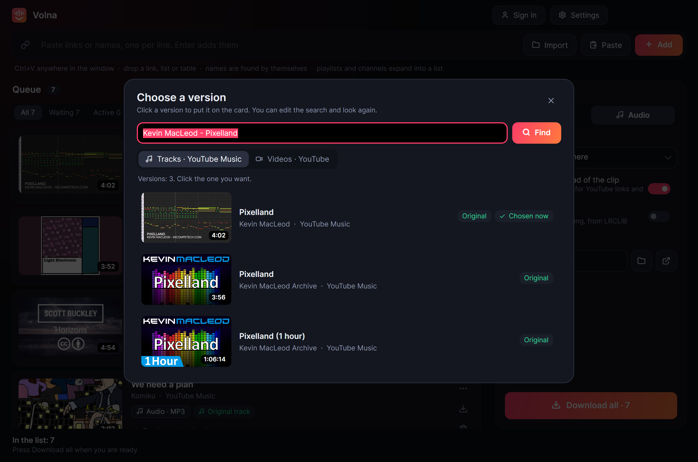
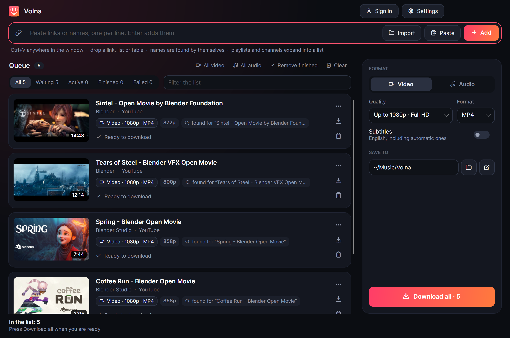

Find it by name.
Check it. Download it.
A desktop downloader for video and music from YouTube and over a thousand other sites. Links and song names both work, and a queue of thousands is fine.
Free and open source. Windows, macOS and Linux.
Names work like links
Paste “Artist - Song” lines, numbered or not, and each one is found for you.
The song, not the music video
Audio comes from the studio recording, without a clip's intros, dialogue and sound effects.
You pick the version
Every card shows artist and album, and other versions are a click away.
Video, your way
Over a thousand sites, whole playlists and channels, up to 8K, with a quality for each card and only the part you need.
A list from anywhere
Any table with names in it works, from any service or script, with no login to any of them.
It points at what to check
Cards whose length or title do not fit are marked and collected under one filter.
It repairs itself
When a site changes, yt-dlp updates and the failed download runs again by itself.
Built for long lists
Filters, search, retry of failures. The queue survives closing the app, and files are never fetched twice.
Your browser's sign-ins
For age-restricted and private videos, on any site, it uses the browser you already use. Your passwords never touch the app.
AI assistants can use it
A built-in MCP server lets models search, download, read transcripts and look at video frames.

